Do naming rights de marcos arquitetônicos a ativações pontuais em corridas de rua: encontre a oportunidade certa para os objetivos e o orçamento da sua marca.
Um dos maiores circuitos de corridas de rua do País, com três etapas em 2026 e milhares de participantes por etapa.
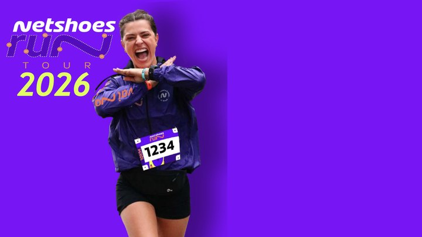
Um dos maiores circuitos de corridas de rua do País, com três etapas em 2026 em São Paulo, Brasília e Recife, atraindo milhares de participantes e consolidando-se como uma das principais plataformas de construção de marca do mercado brasileiro.
Seja parceiro da Netshoes Run Tour Adidas e alcance um público ativo e engajado.
Corrida beneficente da Liga Feminina de Combate ao Câncer do RS, associando sua marca a uma causa de diagnóstico precoce e hábitos saudáveis.
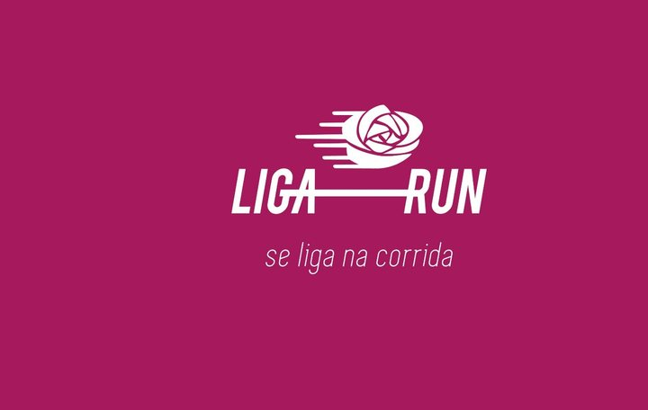
A Liga Feminina de Combate ao Câncer do Rio Grande do Sul promove uma corrida de rua beneficente, idealizada pela influenciadora Antônia Ranzolin Falcão, que busca conscientizar sobre o diagnóstico precoce do câncer e promover hábitos saudáveis.
Seja um parceiro da Liga Run e associe sua marca a uma causa que transforma vidas.
Corrida de rua que une esporte, inclusão social e bem-estar, com renda revertida a projetos educacionais para jovens.
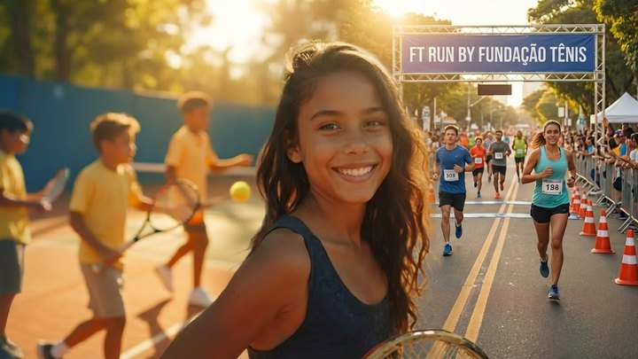
Organizada pela Fundação Tênis, a FT Run é um evento de corrida de rua em Porto Alegre que une esporte, inclusão social e bem-estar, arrecadando fundos para projetos educacionais que transformam a vida de jovens talentos.
Seja um parceiro da FT Run e mostre que sua marca joga junto com a inclusão e o esporte.
Corrida de rua do Grupo Panvel com distâncias para todos os níveis, aquecimento, entretenimento e serviços de saúde.
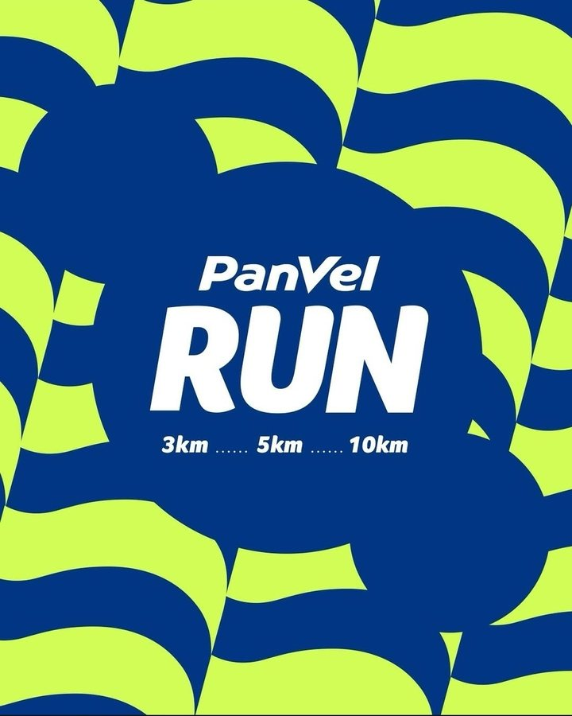
Organizada pelo Grupo Panvel, a corrida oferece distâncias para todos os níveis, além de aquecimento, entretenimento e serviços de saúde, promovendo bem-estar e um estilo de vida ativo para clientes e comunidade.
Apoie a Panvel Run e aumente sua visibilidade enquanto impacta positivamente a comunidade.
Circuito de aventura e superação (OCR, Trail e Ninja), uma das mais potentes plataformas de posicionamento de marca no Sul do Brasil.
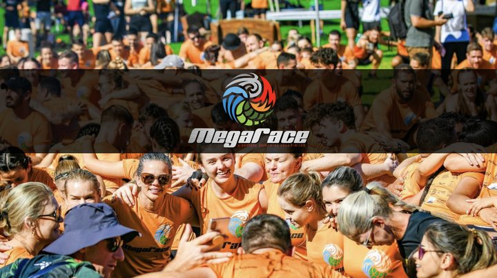
Circuito de aventura e superação que reúne provas de OCR, Trail e Ninja, atraindo milhares de atletas e famílias apaixonadas por um estilo de vida saudável. Uma das mais potentes plataformas de construção de marca do Sul do Brasil.
Associe sua marca aos conceitos de excelência e superação da MegaRace 2026.
Corrida da Rede Laghetto de Hotéis na Serra Gaúcha, com percursos de 21km, 7km, 3km e Kids em cenário turístico.
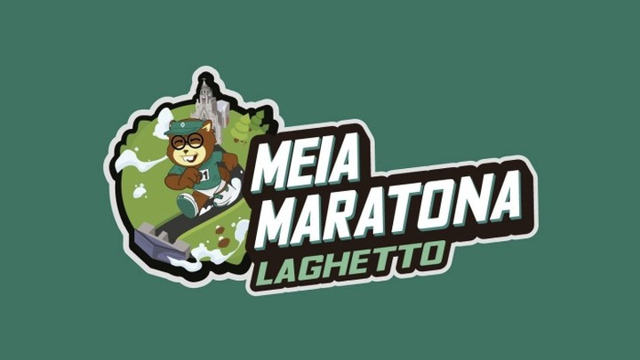
Organizada pela Rede Laghetto de Hotéis em Gramado, na Serra Gaúcha, a prova reúne corredores de diversos níveis em percursos de 21km, 7km, 3km e Kids, unindo turismo, esporte e bem-estar em cenário privilegiado.
Seja parceiro da Meia Maratona Laghetto e conquiste um público seleto em um cenário inspirador.
Torneio de tênis amador voltado ao setor de saúde, com ativações, serviços de saúde e networking qualificado.
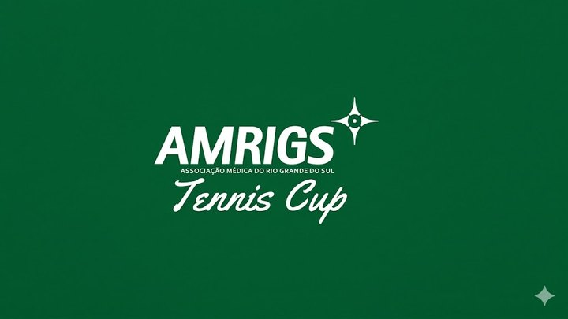
Torneio de tênis amador com naming da AMRIGS, voltado ao público do setor de saúde, incentivando a prática esportiva e o bem-estar com ativações, serviços de saúde e networking qualificado entre os participantes.
Seja parceiro da AMRIGS Tennis Cup e conecte-se com um público seleto em um ambiente de competição.
Experiência exclusiva com o ex-Top 8 do mundo Diego Schwartzman: clínica, interação com atletas e experiências premium para poucos convidados.
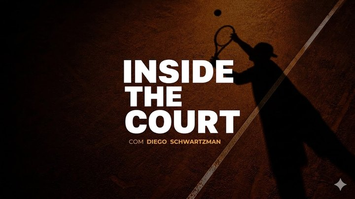
Experiência exclusiva que traz a Porto Alegre o ex-Top 8 do mundo Diego Schwartzman, para uma jornada imersiva dentro e fora da quadra, com clínica, interação com atletas e experiências premium para poucos convidados.
Associe sua marca a uma plataforma proprietária de conexão, exclusividade e alto nível.
Um dos eventos de street skate mais tradicionais do Brasil, com parceria da Confederação Brasileira de Skateboarding em 2026.
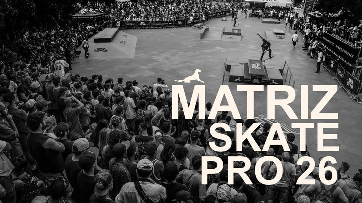
Um dos eventos de street skate mais tradicionais do Brasil, reconhecido desde os anos 90 por revelar talentos e promover a cultura urbana, agora com a parceria estratégica da Confederação Brasileira de Skateboarding.
Seja parceiro do Matriz Skate Pro e conecte-se com um público apaixonado por esporte e cultura urbana.
Complexo histórico e cultural às margens do Guaíba, com espaços para eventos, gastronomia, cultura e lazer.
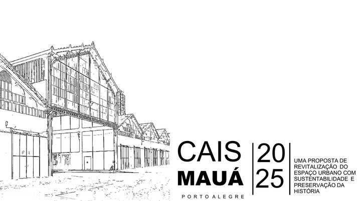
Complexo histórico e cultural às margens do Guaíba, em Porto Alegre, com espaços para eventos, gastronomia, cultura e lazer, atraindo moradores e turistas em busca de contato com a história da Capital.
Seja um parceiro do Cais Mauá e conecte-se com um público diversificado em um ambiente único.
Complexo turístico com teleférico e trilhas ecológicas, recebendo mais de 1 milhão de visitantes por ano.
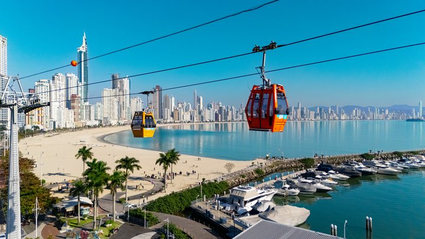
Complexo turístico em Balneário Camboriú com teleférico, trilhas ecológicas, mirantes panorâmicos e o trenó de montanha Youhooo!, recebendo mais de 1 milhão de visitantes por ano em experiências únicas em meio à natureza.
Seja parceiro do Parque Unipraias e conecte sua marca a um destino turístico consolidado.
Primeiro arranha-céu da América Latina, marco arquitetônico com vista panorâmica e eventos culturais.
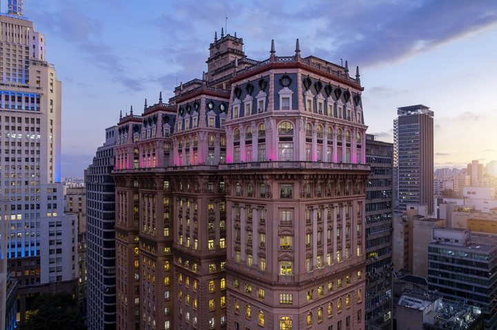
Marco arquitetônico e histórico de São Paulo, construído na década de 1920 como o primeiro arranha-céu da América Latina, hoje aberto a visitantes para vista panorâmica da cidade e eventos culturais.
Seja um parceiro do Edifício Martinelli e associe sua marca a um ícone da arquitetura paulistana.
Coração de um polo de inovação e criatividade do Instituto Caldeira, com projeto aprovado via Lei Rouanet.
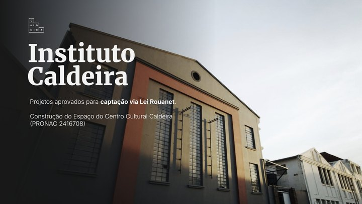
Coração de um polo de inovação e criatividade que o Instituto Caldeira está construindo em Porto Alegre, um ecossistema dedicado à transformação através da cultura no desenvolvimento de um distrito vibrante.
Seja parceiro do Centro Cultural Caldeira e conecte-se com um ambiente de transformação e inspiração.
Comemoração de um patrimônio histórico e cultural de reconhecimento mundial, com eventos culturais, educativos e turísticos.
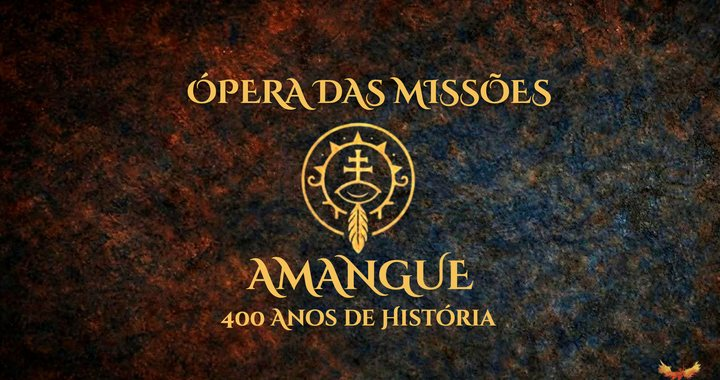
Em 2026 celebraremos os 400 Anos das Missões Jesuíticas, um legado de cultura, fé e história que transcende séculos, com eventos culturais, educativos e turísticos que valorizam esse patrimônio da humanidade.
Seja parceiro das comemorações e conecte sua marca à história e à cultura brasileira.
Aventura familiar brasileira com o robô Byte, uma plataforma de entretenimento, educação e licenciamento, com incentivo via Lei do Audiovisual e ProAC ICMS.
Aventura familiar brasileira que une nostalgia, tecnologia e emoção através do carismático robô Byte, com alto potencial de licenciamento e ativações de marca, aprovada via Lei do Audiovisual e ProAC ICMS.
Associe sua marca a uma plataforma de entretenimento, educação e impacto social.
No primeiro dia da primavera, música instrumental em locais públicos e privados celebrando o renascimento e a esperança da estação.
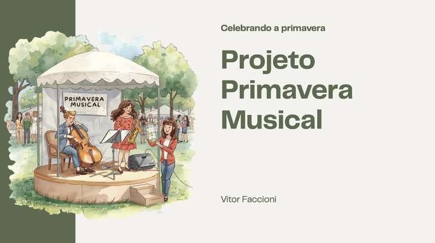
No primeiro dia da primavera, o evento transforma a cidade em um palco vibrante, com apresentações instrumentais em locais públicos e privados que celebram o renascimento e a esperança que a estação representa.
Seja parceiro do Primavera Musical e leve sua marca a um momento mágico e inesquecível.
Festival Mundial do Churrasco: três dias de gastronomia, cultura e entretenimento, com competições internacionais e 50 mil visitantes esperados.
Festival Mundial do Churrasco, uma celebração de três dias que reúne gastronomia, cultura e entretenimento, com competições internacionais, shows e ações sustentáveis, atraindo 50 mil visitantes do Brasil e do mundo.
Junte-se a essa experiência pioneira que transforma a arte do churrasco em algo multissensorial.
Jantar com aula exclusiva conduzida por experts da renomada escola de gastronomia, associando sua marca a prestígio e requinte.
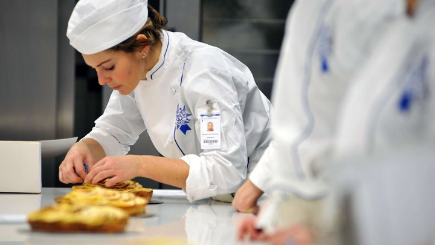
Experiência de jantar com aula exclusiva conduzida por experts da renomada escola de gastronomia em sua sede em São Paulo, em um ambiente que evoca uma confraria e celebra o paladar.
Seja um parceiro do Dinner Experience e proporcione momentos de puro requinte a clientes especiais.
Café da manhã, almoços e jantares exclusivos de alto padrão para empresas e grupos selecionados, com chef formada no Institut Paul Bocuse.
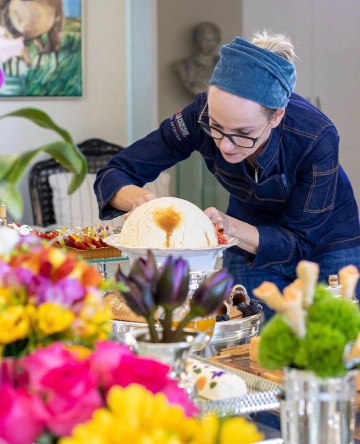
Fabi Artmann é chef e curadora de experiências gastronômicas com mais de 17 anos de trajetória, formada pelo Institut Paul Bocuse, em Lyon, criando café da manhã, almoços e jantares exclusivos para empresas e grupos selecionados.
Associe sua marca a experiências que promovem networking qualificado e conexões memoráveis.
Networking de alto nível entre líderes empresariais, com protagonismo em 4 iniciativas do LIDE RS/SC e destaque no Prêmio Líderes Anual.
Reúne líderes empresariais para debater temas relevantes, com networking de alto nível e acesso a todos os fóruns por um ano, além de protagonismo em 4 iniciativas do LIDE RS ou SC.
Seja um parceiro do Painel LIDE e posicione sua empresa como protagonista entre líderes influentes.
Evento que reúne jovens talentos e líderes reconhecidos pela Forbes, com palestras, workshops e networking.
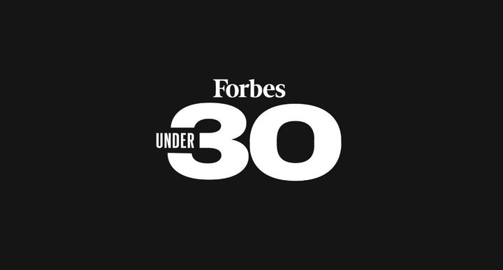
Evento que reúne jovens talentos e líderes reconhecidos pela revista Forbes por seu destaque com menos de 30 anos, com palestras, workshops e networking entre mentes brilhantes de diversas áreas.
Seja um parceiro do Forbes Under 30 e posicione sua marca na vanguarda da próxima geração de líderes.
Líderes urbanos e especialistas discutindo sustentabilidade, mobilidade e tecnologia para as cidades do futuro.
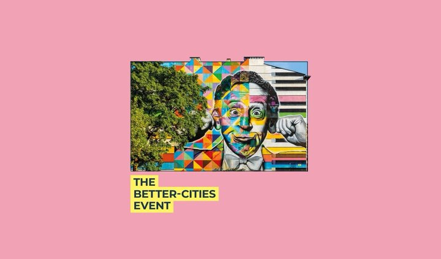
Promovido pela Urban Futures, reúne líderes urbanos e especialistas para discutir soluções de sustentabilidade, mobilidade e tecnologia para as cidades do futuro, através de palestras e workshops.
Seja um parceiro do Better Cities e conecte-se com um público influente e engajado.
Plataforma de conteúdo e negócios dentro da maior feira do agronegócio da América Latina, com aprovação via Lei Rouanet.
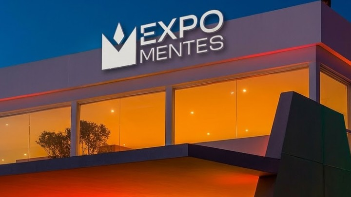
Plataforma de conteúdo e negócios dentro da Expointer 2026, a maior feira do agronegócio da América Latina, reunindo empresários, investidores e líderes em um ambiente premium com aprovação via Lei Rouanet.
Seja parceiro do ExpoMentes e posicione sua marca junto a grandes nomes do mercado.
Conteúdo, networking e negócios no ciclo da Copa do Mundo Feminina FIFA 2027, com foco em diversidade e protagonismo feminino.
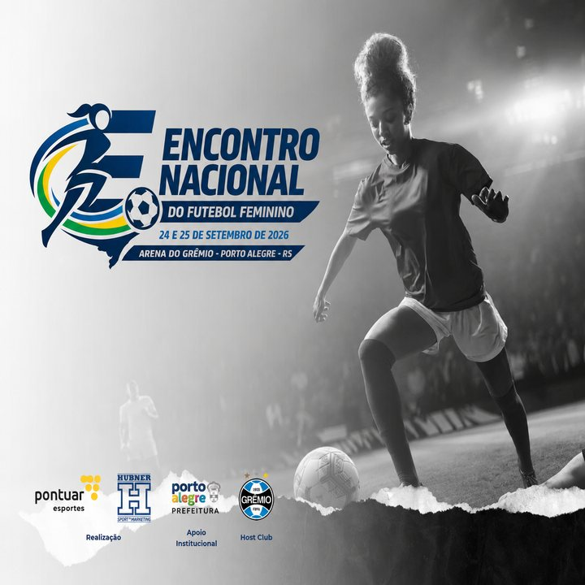
Plataforma de conteúdo, networking e negócios no ciclo da Copa do Mundo Feminina FIFA 2027, realizada na Arena do Grêmio, com foco em fortalecer o mercado e o protagonismo feminino no futebol.
Seja parceiro e associe sua marca à diversidade, inovação e liderança no esporte.
Hub de inovação, saúde, longevidade e wellness, com conteúdo, networking e negócios no coração da Serra Gaúcha.
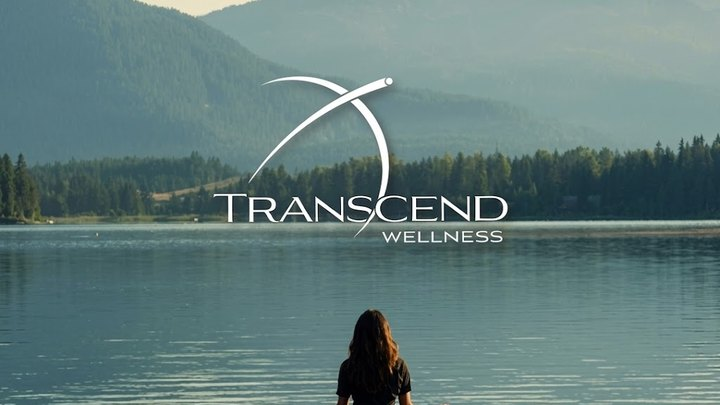
Hub de inovação, saúde, longevidade e wellness em Gramado, na Serra Gaúcha, reunindo líderes e profissionais da saúde em uma experiência exclusiva de conteúdo e geração de negócios.
Seja parceiro do Transcend Wellness e conecte sua marca a um dos mercados que mais crescem no mundo.
Maior ecossistema do Brasil focado em transformar experiência em vantagem competitiva; última edição impactou mais de 250 mil pessoas.
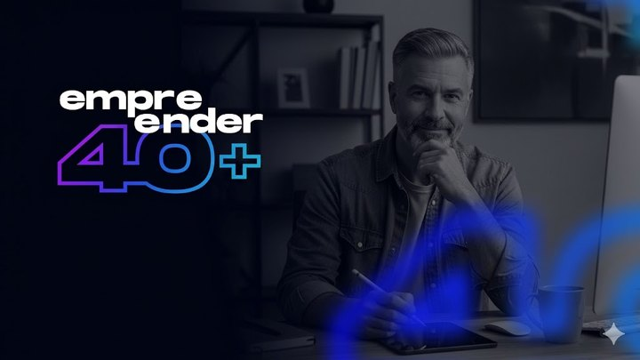
Maior ecossistema do Brasil focado em transformar experiência em vantagem competitiva, com o Summit Empreender 40+ como grande vitrine, evento que na última edição impactou mais de 250 mil pessoas.
Apoie esta iniciativa e conecte sua marca a um público altamente qualificado.
Dois dias de imersão para médicos, dentistas e gestores de clínicas em aprendizado, networking e estratégias de gestão.
Reúne líderes e inovadores do setor da saúde para dois dias de imersão em aprendizado, networking e estratégias de gestão, voltado a médicos, dentistas e gestores de clínicas.
Seja um parceiro do Health Business Meeting e posicione sua marca como referência em inovação e gestão.
Competição científica gratuita e inclusiva para estudantes do ensino fundamental e médio, com formato híbrido e escalável.
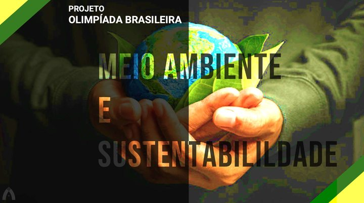
Competição científica nacional, gratuita e inclusiva para estudantes do ensino fundamental e médio, com formato híbrido que explora temas ambientais e incentiva a formação de novos talentos.
Seja um parceiro e associe sua marca a um futuro mais verde e à próxima geração de líderes.
Parceria com a Rock World para levar tecnologia e conectividade à "Cidade do Rock" do Rock in Rio.
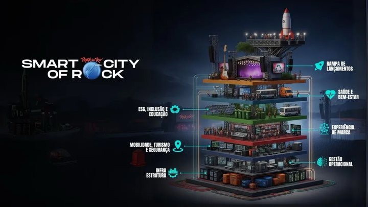
Projeto que busca levar mais tecnologia à Cidade do Rock, transformando o espaço de um dos maiores festivais de música do planeta em uma verdadeira cidade inteligente, em parceria com a Rock World.
Traga sua marca e ajude a conectar inovação, tecnologia e entretenimento no Rock in Rio.
Ex-presidente de um dos ciclos mais vitoriosos do Internacional (Libertadores e Mundial 2006), hoje palestrante e criador de conteúdo.
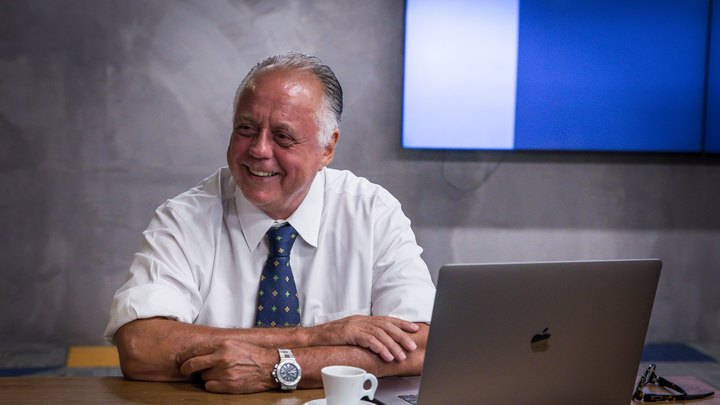
Ex-presidente de um dos ciclos mais vitoriosos do Sport Club Internacional, liderando as conquistas da Libertadores e do Mundial FIFA 2006. Hoje é palestrante e criador de conteúdo, referência em gestão esportiva e liderança.
Associe sua marca a uma plataforma de autoridade, credibilidade e legado vencedor.
25+ anos de Grupo RBS, referência de comunicação no Sul do Brasil, com produtos que aproximam marcas de nomes relevantes.
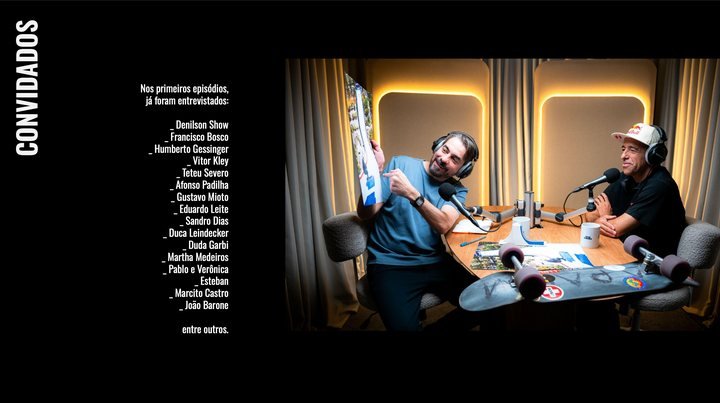
Com mais de 25 anos de experiência no Grupo RBS, Potter é referência de comunicação no Sul do Brasil, com produtos como Potter Entrevista, Aquela História e Histórias do Potter.
Fortaleça sua marca junto a um público fiel e engajado com o universo de Potter.
Influenciadora e jornalista, com passagens pelo Grupo RBS e SBT, além de conexão autêntica e engajada com sua audiência.
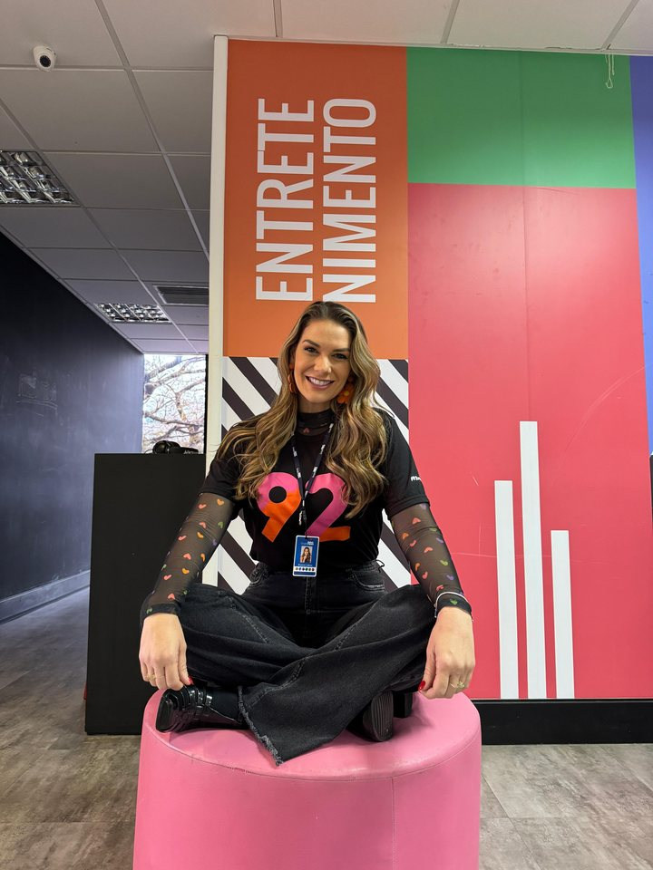
Influenciadora e jornalista com passagens pelo Grupo RBS e SBT, Brunna compartilha dicas, experiências e histórias envolventes com uma abordagem leve, autêntica e divertida nas redes sociais.
Conecte-se a uma audiência engajada através da sinceridade de Brunna Colossi.
Jornalista investigativo com 20+ anos de experiência (RBS, Fantástico/Globo), hoje à frente do Caso a Caso Podcast.
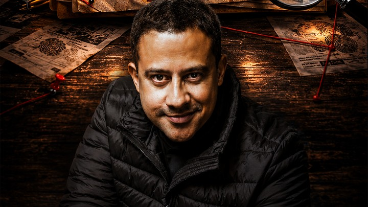
Jornalista com mais de 20 anos de experiência em rádio, televisão e jornalismo investigativo, com passagem de 18 anos pelo Grupo RBS. Atualmente lidera o Caso a Caso Podcast, focado em segurança pública e justiça.
Associe sua marca a um projeto que busca ser referência regional em investigação e jornalismo.
Iniciativas institucionais e sociais com as quais sua marca pode se associar para gerar impacto real na comunidade gaúcha. Nestes projetos a equipe da MeetandGreat.Co atua pró bono.
RSNASCE
Iniciativa social ligada ao ecossistema de inovação do RS.
Iniciativa social ligada ao ecossistema de inovação do Rio Grande do Sul, conectando empreendedores, instituições e comunidade em projetos que fortalecem o desenvolvimento local.
Apoie o RSNASCE e faça parte de um movimento pelo futuro do Estado.
Pacto Alegre
Mobilização institucional em torno do desenvolvimento de Porto Alegre.
Mobilização institucional que reúne lideranças públicas e privadas em torno do desenvolvimento de Porto Alegre, com ações voltadas à reconstrução e ao fortalecimento da cidade.
Apoie o Pacto Alegre e contribua para o futuro da Capital.
Instituto Retomada
Projeto social com foco em reconstrução e resiliência da comunidade.
Projeto social com foco em reconstrução e resiliência da comunidade gaúcha, apoiando famílias e territórios atingidos a retomar sua rotina com dignidade.
Apoie o Instituto Retomada e ajude a reconstruir vidas.
CPOR Porto Alegre
Iniciativa institucional ligada à formação e cidadania.
Iniciativa institucional ligada à formação e à cidadania, unindo disciplina, propósito e desenvolvimento de jovens lideranças no Rio Grande do Sul.
Apoie o CPOR Porto Alegre e invista na formação de novas gerações.